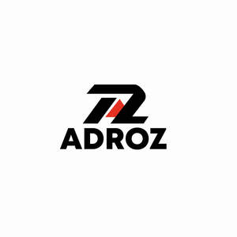

Trade Mark Journal No.2026/008 20 February 2026
UK00004334185 2 February 2026 (3,5,25)

- Class 3
- Lipstick; Lipsticks; Lipstick cases; Eyeliner; Mascara; Eyeshadow; Eye-shadow; Lip makeup; Lip cosmetics; Lip stains [cosmetics]; Blusher; Hair mascara; Lip gloss palettes; Eyebrow mascara; Eyeliners; Eyeshadows; Eyeshadow palettes; Eyeliner pencils; Sun blocking lipsticks [cosmetics]; Face blusher; Blushers; Lip glosses; Blush pencils; Blush; Make-up palettes containing cosmetics; Nail primer [cosmetics]; Nail makeup; Colour cosmetics; Liquid eyeliners; Makeup; Lip rouge; Nail cosmetics; Powder for make-up; Make-up powder; Powder (Make-up -); Colour cosmetics for the skin; Lip gloss; Nail paint [cosmetics]; Lip balm; Make-up; Make-up primer; Hair cosmetics; Lip cream; Make-up pencils; Nail polish removers [cosmetics]; Cosmetics; Lip pencils; Eyebrow cosmetics; Skin make-up; Lip balms; Cosmetics for eye-lashes; Colour cosmetics for the eyes; Nail base coat [cosmetics]; Moisturisers [cosmetics]; Nail varnish remover [cosmetics]; Glitter in spray form for use as a cosmetics; Lip pomades; Cosmetics for the use on the hair; Lip tints; Make-up for compacts; Skin moisturizers used as cosmetics; Facial concealer; Powder compacts [cosmetics]; Foundation make-up; Make-up foundation; Make-up remover; Concealers; Night creams [cosmetics]; Cosmetic pencils for cheeks; Suntan lotion [cosmetics]; Hair balm; Make-up for the face; Skin masks [cosmetics]; Make-up primers; Lip liner; Mascaras; Cosmetics for use on the skin; Cosmetics in the form of rouge; Nail polish remover pens; Liners [cosmetics] for the eyes; Lip balm [non-medicated]; Mattifying gel cream; Lip stains for cosmetic purposes; Eye makeup remover; Make-up foundations; Make-up removers; Powder compact refills [cosmetics]; Nail polish pens; Lip liners; Skin fresheners [cosmetics]; Bath powder [cosmetics]; Lip neutralizers; Hair balms; Eye makeup; Solid powder for compacts [cosmetics]; Facial creams [cosmetics]; Nail tips [cosmetics]; Nail glitter; Skincare cosmetics; Chalk for make-up; Shoe polish and creams; Face glitter; Eye cosmetics; Facial makeup; Lip balms [non-medicated]; Eye make-up; Lip polisher; Eye concealers; Face powders [for cosmetic use].
- Class 5
- Vitamin supplements; Dietary supplements; Nutritional supplements; Probiotic supplements; Herbal supplements; Homeopathic supplements; Flaxseed dietary supplements; Calcium supplements; Anti-oxidant supplements; Colostrum supplements; Protein supplements; Dietary supplements consisting of vitamins; Prebiotic supplements; Lecithin dietary supplements; Colostrum dietary supplements; Food supplements; Mineral dietary supplements; Zinc dietary supplements; Propolis dietary supplements; Acai powder dietary supplements; Mineral nutritional supplements; Dietary and nutritional supplements; Liquid dietary supplements; Nutraceuticals for use as a dietary supplement; Vitamin supplements for animals; Protein dietary supplements; Vitamin and mineral supplements; Linseed dietary supplements; Liquid nutritional supplements; Yeast dietary supplements; Liquid vitamin supplements; Casein dietary supplements; Enzyme dietary supplements; Dietary supplements for animals; Dietary supplements for pets; Dietary food supplements; Anti-oxidant food supplements; Alginate dietary supplements; Albumin dietary supplements; Liquid herbal supplements; Flaxseed oil dietary supplements; Wheat dietary supplements; Vitamin and mineral supplements for pets; Dietary supplements for infants; Dietary supplements for humans; Pollen dietary supplements; Energy gels (dietary supplements); Glucose dietary supplements; Protein powder dietary supplements; Dietary supplements in powder form; Vitamin and mineral food supplements; Mineral dietary supplements for animals; Nutritional supplements for veterinary use; Dietary supplements with a cosmetic effect; Medicated food supplements; Dietary supplements for medical use; Mineral dietary supplements for humans; Whey protein dietary supplements; Food supplements for sportsmen; Nutritional supplements consisting primarily of magnesium; Protein supplements for animals; Dietary supplements consisting primarily of magnesium; Soy protein dietary supplements; Vitamin supplement patches; Health-aid foods supplements containing ginseng; Health food supplements made principally of vitamins; Vitamin preparations in the nature of food supplements; Soy isoflavone dietary supplements; Dietary supplement drinks; Dietary supplements and dietetic preparations; Linseed oil dietary supplements; Nutritional supplements consisting of fungal extracts; Nutritional supplements consisting primarily of calcium; Brewer's yeast dietary supplements; Folic acid dietary supplements; Calcium tablets as a food supplement; Dietary supplements consisting primarily of calcium; Nutritional supplements consisting primarily of zinc; Dietary supplements for controlling cholesterol; Nutritional supplements for livestock feed; Nutritional supplements consisting primarily of iron; Herbal dietary supplements for persons special dietary requirements; Dietary supplements and dietetic preparations containing CBD oil; Food supplements for veterinary use; Dietary supplements consisting primarily of iron; Food supplements for dietetic use; Dietary supplements promoting fitness and endurance; Multivitamins; Medicated supplements for animal feedstuffs; Nutritional supplement energy bars; Dietary food supplements used for modified fasting; Feed supplements for veterinary use; Dietary supplement drink mixes; Health food supplements made principally of minerals; Mineral supplements for feeding livestock; Medicated supplements for foodstuffs for animals; Food supplements for medical purposes; Ganoderma lucidum spore powder dietary supplements; Activated charcoal dietary supplements; Zinc supplement lozenges; Fitness and endurance supplements; Food supplements in liquid form; Natural dietary supplements for treating claustrophobia; Food supplements for non-medical purposes; Wheat germ dietary supplements; Protein supplement shakes; Dietary supplements for pets in the nature of a powdered drink mix; Vitamin supplements for use in renal dialysis; Ground flaxseed fiber for use as a dietary supplement; Royal jelly dietary supplements; Antibiotic food supplements for animals; Pine pollen dietary supplements; Diet capsules; Health food supplements for persons with special dietary requirements; Dietary supplements for humans not for medical purposes; Food supplements consisting of amino acids; Nutritional supplement meal replacement bars for boosting energy; Powdered nutritional supplement drink mix; Dietary supplements for human beings; Fodder supplements for veterinary purposes; Vitamins and vitamin preparations; Dietary pet supplements in the form of pet treats; Preparations for supplementing the body with essential vitamins and microelements; Health-aid foods supplement containing red ginseng; Capsules for medicines; Multi-vitamin preparations; Food supplements consisting of trace elements; Nutritional supplements made of starch adapted for medical use; Powdered nutritional supplement energy drink mix; Powdered fruit-flavored dietary supplement drink mix; Delivery agents in the form of coatings for tablets that facilitate the delivery of nutritional supplements; Preparations of vitamins; Antioxidant pills; Multivitamin preparations.
- Class 25
- Bras; Nursing bras; Sports bras; Lingerie; Undergarments; Maternity lingerie; Underwear; Maternity underwear; Shapewear; Underwear for women; Knickers; Women's underwear.
Adeel Trading Ltd